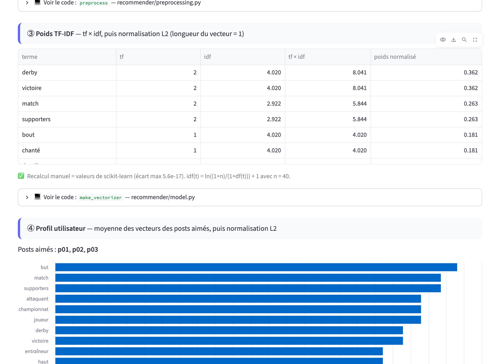
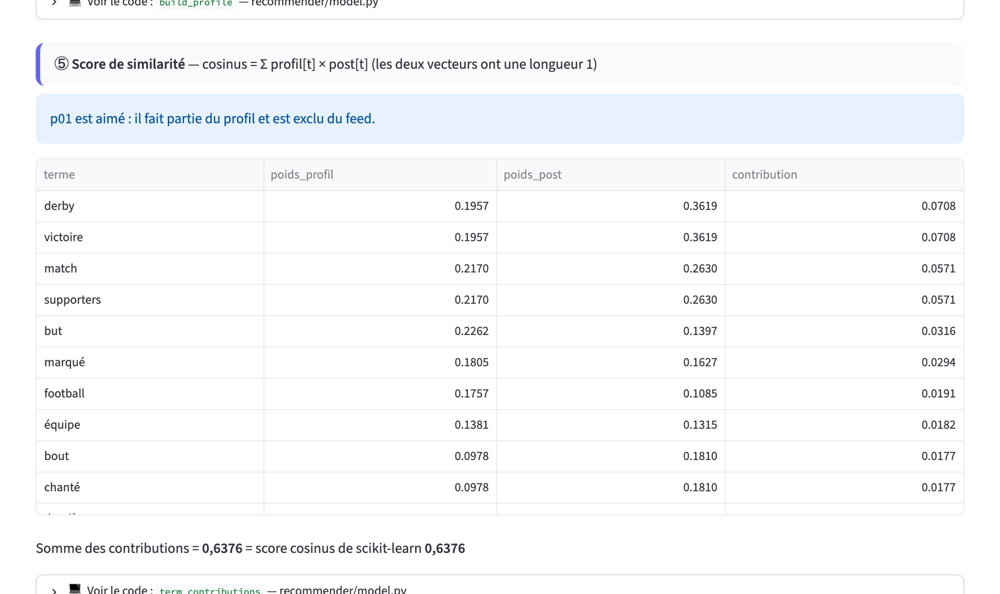
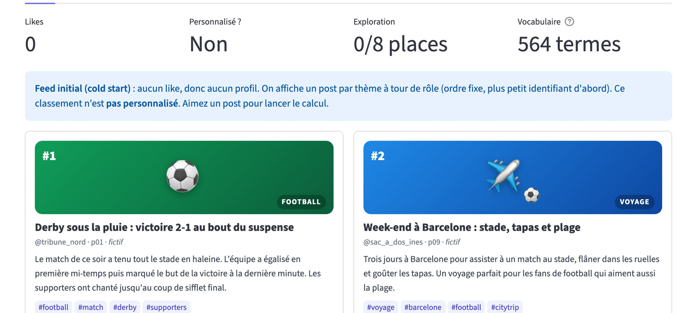
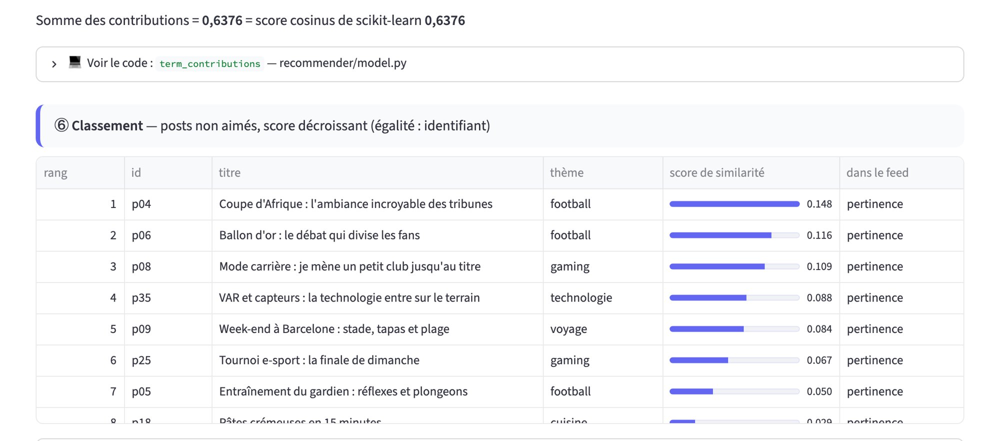
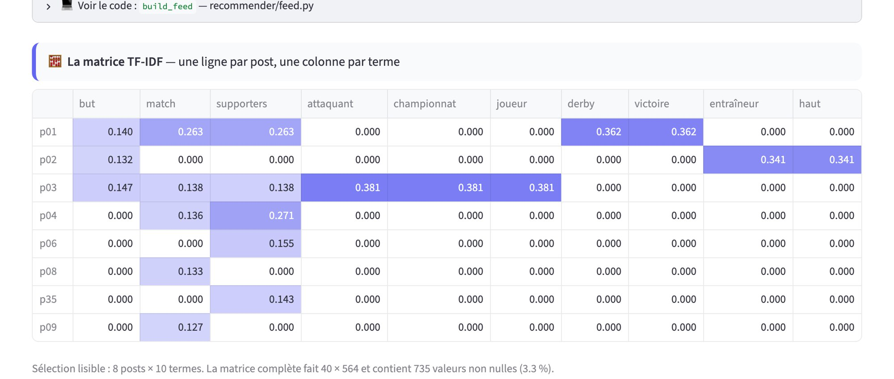
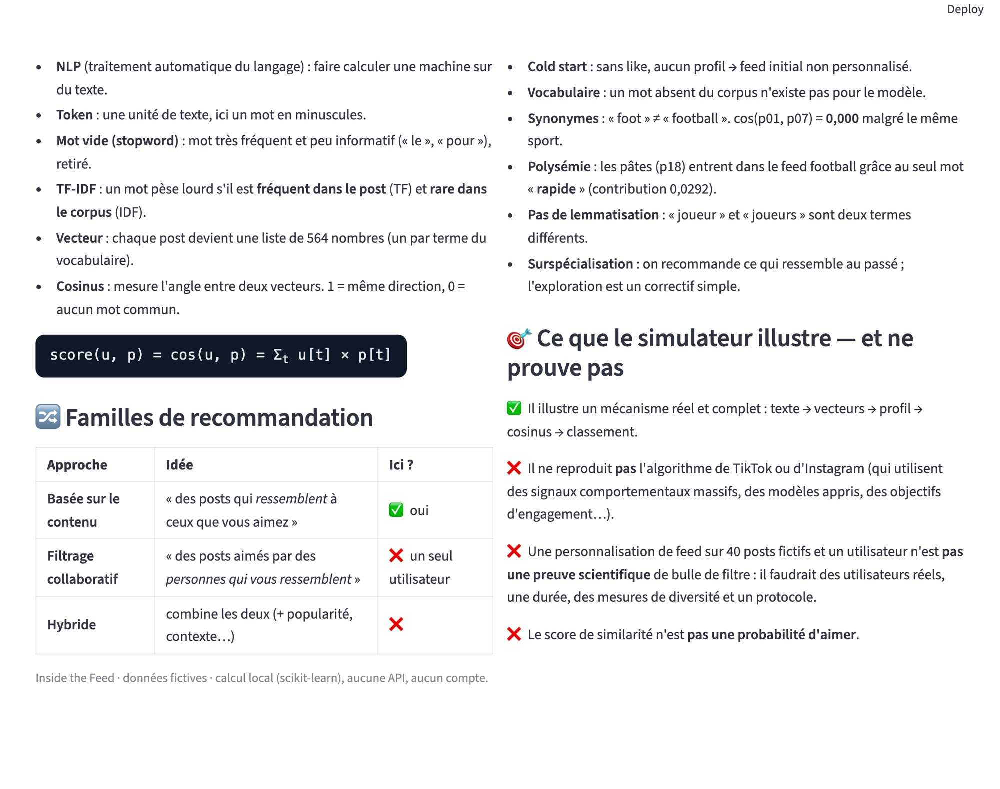

Introduction
Chaque jour, les réseaux sociaux, les plateformes vidéo et les sites d'information choisissent pour nous quelques dizaines de publications parmi des milliers. Cette sélection, que l'on appelle le feed, n'est pas le fruit du hasard : elle est produite par un système de recommandation, c'est-à-dire un programme qui estime quels contenus sont susceptibles d'intéresser un utilisateur donné.
Ces systèmes reposent en grande partie sur le traitement automatique du langage naturel (NLP). Pour comparer des publications entre elles, ou une publication avec les goûts d'un utilisateur, il faut d'abord transformer du texte en une représentation numérique sur laquelle une machine peut calculer.
Ce projet, intitulé « Inside the Feed », a pour but d'ouvrir le capot d'un tel moteur. Nous avons construit un mini réseau social simulé, composé de 40 publications fictives réparties en six thèmes, et un moteur de recommandation basé sur le contenu : les textes sont vectorisés par TF-IDF, l'utilisateur est représenté par un profil construit à partir de ses likes, et les publications sont classées par similarité cosinus.
L'accent est mis sur l'explicabilité : chaque score affiché peut être décomposé terme par terme, et l'interface Streamlit montre, étape par étape, comment un texte devient un vecteur puis un rang dans le feed. La problématique qui guide ce travail est la suivante :
Comment un système peut-il transformer des textes et des interactions en un feed personnalisé, et dans quelle mesure ce calcul peut-il être rendu explicable ?
Ce rapport présente successivement les objectifs et l'environnement technique, les notions théoriques mobilisées, la conception du moteur, l'interface réalisée, les expériences menées, puis une analyse critique des limites du modèle.
Objectifs et environnement technique
Objectifs du projet
Les principaux objectifs sont les suivants :
- Comprendre le fonctionnement d'un système de recommandation basé sur le contenu.
- Mettre en œuvre une chaîne de prétraitement de texte en français (tokenisation, mots vides).
- Représenter les publications par des vecteurs TF-IDF et les comparer par similarité cosinus.
- Construire un profil utilisateur à partir de likes et en déduire un feed classé.
- Rendre chaque recommandation explicable, terme par terme.
- Développer une interface interactive permettant de démontrer le mécanisme en direct.
- Observer les effets et les limites du modèle à travers des expériences reproductibles.
Environnement matériel et logiciel
Le travail a été réalisé dans l'environnement suivant :
| Élément | Description |
|---|---|
| Système d'exploitation | macOS |
| Langage | Python 3.13.2 |
| Environnement | Environnement virtuel Python (.venv) |
| Vectorisation et similarité | scikit-learn 1.9.1 (TfidfVectorizer, cosine_similarity) |
| Calcul numérique | NumPy, pandas |
| Interface | Streamlit 1.66.1 |
| Tests | pytest (44 tests automatiques) |
| Données | 40 publications fictives (data/posts.json), 6 thèmes |
| Adresse locale | http://localhost:8501 |
L'application fonctionne entièrement hors ligne : aucune API externe, aucun compte et aucune base de données ne sont utilisés. Le serveur Streamlit n'écoute que sur l'adresse locale et la télémétrie est désactivée.
Installation des dépendances
Un environnement virtuel Python a été utilisé afin d'isoler les dépendances du projet. Les commandes suivantes permettent de le créer, de l'activer et d'installer les bibliothèques nécessaires :
python3.13 -m venv .venv source .venv/bin/activate python -m pip install -r requirements.txt pytest python -m pytest -q
La dernière commande exécute la suite de tests et permet de vérifier que l'installation est complète et que les calculs donnent les résultats attendus.
Étude théorique
Systèmes de recommandation
Un système de recommandation résout un problème de classement : parmi un grand nombre de contenus, il doit décider lesquels montrer en premier. On distingue habituellement trois familles :
- Recommandation basée sur le contenu : on recommande des contenus qui ressemblent à ceux que l'utilisateur a aimés. La ressemblance est calculée à partir des caractéristiques des contenus, ici leur texte.
- Filtrage collaboratif : on recommande des contenus aimés par des utilisateurs aux goûts proches (« ceux qui ont aimé X ont aussi aimé Y »). Le texte n'est pas utilisé.
- Approche hybride : combinaison des deux, enrichie de signaux comme la popularité ou le contexte. C'est le cas des grandes plateformes.
Ce projet se concentre sur la première famille : elle ne nécessite qu'un seul utilisateur et peut être expliquée entièrement, ce qui la rend adaptée à un démonstrateur pédagogique.
Prétraitement du texte
Avant toute représentation numérique, le texte brut est normalisé. Trois opérations sont appliquées :
- mise en minuscules, pour que « Match » et « match » soient le même mot ;
- tokenisation : découpage du texte en unités (tokens), ici des suites de lettres ;
- suppression des mots vides (stopwords) : mots très fréquents et peu informatifs comme « le », « de » ou « pour ».
Aucune lemmatisation n'est effectuée : « joueur » et « joueurs » restent deux termes distincts. Ce choix volontaire simplifie l'explication et sera discuté dans les limites.
Pondération TF-IDF
TF-IDF (Term Frequency – Inverse Document Frequency) attribue à chaque terme d'un document un poids d'autant plus élevé que le terme est fréquent dans le document et rare dans le corpus. Avec n le nombre de documents et df(t) le nombre de documents contenant le terme t, les formules réellement utilisées sont :
La formule (2.2) correspond à l'idf lissé de scikit-learn (smooth_idf=True). La normalisation L2
de l'équation (2.3) donne à chaque vecteur une longueur égale à 1, ce qui simplifie le calcul du cosinus.
Similarité cosinus
La similarité cosinus mesure l'angle entre deux vecteurs, indépendamment de leur longueur :
Comme tous les poids TF-IDF sont positifs, le score est compris entre 0 (aucun terme commun) et 1 (même direction). Puisque les vecteurs sont normalisés, le cosinus devient une simple somme de produits terme par terme : c'est cette propriété qui rend chaque recommandation explicable.
Profil utilisateur
L'utilisateur est représenté dans le même espace vectoriel que les publications. Son profil est la moyenne des vecteurs des publications aimées L, renormalisée :
Sans aucun like, le profil n'existe pas : c'est le problème du démarrage à froid (cold start).
Architecture du moteur
La chaîne complète, du texte au feed affiché, est représentée ci-dessous.
Les cinq premières étapes relèvent du NLP et du calcul vectoriel. La dernière, la construction du feed, est une règle de produit séparée : elle décide quoi afficher à partir des scores, sans les modifier.
Conception et réalisation du moteur
Organisation du code et données
Le projet sépare strictement les calculs de l'affichage. Le paquet recommender/ contient tout le
moteur et n'importe jamais Streamlit ; il peut donc être testé et réutilisé indépendamment de l'interface.
| Fichier | Rôle |
|---|---|
recommender/preprocessing.py | Texte → tokens (minuscules, expression régulière, mots vides) |
recommender/model.py | TF-IDF, profil, cosinus, contributions des termes |
recommender/feed.py | Feed initial, classement, règle d'exploration |
recommender/scenarios.py | Scénarios de démonstration et expériences A à D |
app.py, ui_style.py | Interface Streamlit (affichage uniquement) |
data/posts.json | 40 publications fictives |
data/stopwords_fr.txt | Liste locale de mots vides |
tests/ | Tests pytest (calculs, scénarios, interface) |
Chaque publication possède un identifiant (p01 à p40), un auteur fictif, un titre, une
description, des hashtags et une catégorie. Les 40 publications se répartissent ainsi : voyage (8), football (7),
technologie (7), gaming (6), cuisine (6) et fitness (6). Toutes les données sont entièrement inventées.
Point important : la catégorie n'est jamais utilisée par le modèle NLP. Seul le texte (titre, description et hashtags) est vectorisé ; la catégorie sert uniquement à l'affichage, au feed initial et à la règle d'exploration.
Prétraitement
Le document analysé est la concaténation du titre, de la description et des hashtags. Il est ensuite découpé
par une expression régulière qui ne conserve que les suites de lettres, accents compris. La ponctuation, les chiffres,
les apostrophes et le symbole # servent de séparateurs : l'équipe devient équipe
et #football devient football.
TOKEN_PATTERN = re.compile(r"[a-zàâäçéèêëîïôöùûüÿœæ]+")
MIN_TOKEN_LENGTH = 2
def build_document(post: dict) -> str:
"""Concatène titre + description + hashtags : c'est le texte analysé."""
return " ".join([post["titre"], post["description"], " ".join(post["hashtags"])])
def tokenize(text: str) -> list[str]:
return [token for token in TOKEN_PATTERN.findall(text.lower())
if len(token) >= MIN_TOKEN_LENGTH]
def preprocess(text: str) -> list[str]:
"""Chaîne complète : texte brut → tokens utiles."""
return remove_stopwords(tokenize(text))Pour la publication p01 (« Derby sous la pluie »), on passe de 50 tokens bruts à 29 tokens
conservés : 21 mots vides sont retirés. La figure suivante montre ce résultat tel qu'il est affiché dans l'application.

Les nombres écrits en lettres (« dix », « trois »…) ont été ajoutés aux mots vides. C'est un choix du projet : « dix buts » et « dix minutes de yoga » créaient une similarité sans rapport avec le sens.
Vectorisation TF-IDF
La vectorisation utilise TfidfVectorizer de scikit-learn. Tous les paramètres sont écrits explicitement
afin de correspondre exactement aux formules du chapitre précédent. Notre fonction preprocess est passée
comme analyzer : le même code sert donc à l'affichage des tokens et au calcul.
def make_vectorizer() -> TfidfVectorizer:
return TfidfVectorizer(
analyzer=preprocess, # notre prétraitement remplace celui de sklearn
use_idf=True,
smooth_idf=True,
sublinear_tf=False,
norm="l2",
)Ajusté sur les 40 publications, le vectoriseur produit un vocabulaire de 564 termes.
La matrice obtenue (40 × 564) ne contient que 735 valeurs non nulles, soit 3,3 % : chaque
publication n'utilise qu'une petite partie du vocabulaire. Quelques valeurs d'idf illustrent la formule (2.2) :
désert 4,020 (présent dans un seul post), supporters 2,922, voyage 2,516,
football 2,411. Plus un mot est répandu, plus son poids est faible.

Profil utilisateur et score
Le profil est calculé comme la moyenne des lignes aimées de la matrice, puis normalisé. Le score d'une publication est son cosinus avec le profil.
def build_profile(self, liked_ids: list[str]) -> np.ndarray | None:
if not liked_ids:
return None # cold start : pas de profil
rows = [self.index[pid] for pid in liked_ids]
mean = np.asarray(self.matrix[rows].mean(axis=0)).ravel()
norm = np.linalg.norm(mean)
return mean / norm if norm > 0 else None
def similarity_scores(self, profile: np.ndarray) -> np.ndarray:
return cosine_similarity(profile.reshape(1, -1), self.matrix).ravel()
def term_contributions(self, profile: np.ndarray, post_id: str) -> list[dict]:
post = self.post_vector(post_id)
products = profile * post # contribution de chaque terme
shared = np.flatnonzero(products) # termes communs au profil et au post
...La fonction term_contributions est au cœur de l'explicabilité : elle renvoie les termes communs au
profil et à la publication, avec leur contribution u[t] × xd[t].
Leur somme est exactement égale au score, ce que vérifie un test automatique.

Construction du feed
Le module feed.py décide quelles publications afficher et dans quel ordre. Le feed contient
8 publications. Trois cas sont distingués :
- Aucun like (cold start) : un post par thème, à tour de rôle, dans un ordre fixe (football, voyage, cuisine, gaming, technologie, fitness). Ce feed est déterministe, équilibré et explicitement marqué comme non personnalisé.
- Avec des likes : les publications non aimées sont triées par score décroissant ; à égalité, l'identifiant départage.
- Exploration : une proportion p du feed est réservée à des thèmes absents du top 8.
La règle d'exploration fonctionne ainsi : on réserve k = arrondi(8 × p) places, on repère les thèmes qui n'apparaissent pas dans les 8 meilleurs scores, puis on prend à tour de rôle le meilleur post non aimé de chaque thème absent. Ces posts sont insérés à intervalles réguliers. Les scores ne sont jamais modifiés : l'exploration n'est pas du NLP, c'est une règle séparée et réglable destinée à limiter la surspécialisation.
def build_feed(model, liked_ids, exploration=0.0, size=FEED_SIZE) -> FeedResult:
if not liked_ids:
items = initial_feed(model, size) # feed équilibré, sans score
...
ranking = rank_by_similarity(model, liked_ids)
top = ranking[:size] # classement de pertinence initial
themes_absents = [c for c in CATEGORY_ORDER if c not in themes_top]
k = exploration_slots(size, exploration) # arrondi(size × p)
explore = pick_exploration(model, ranking, themes_absents, k)
...Interface et démonstration
Principe de l'interface
L'interface est développée avec Streamlit. Elle se contente d'appeler les fonctions du paquet
recommender/ et d'en afficher les résultats. Elle est organisée en quatre onglets :
- Feed : le fil d'actualité simulé, avec un bouton « Aimer » sur chaque carte, le score de similarité et des indicateurs de mouvement (▲, ▼, nouveau) ;
- Ouvrir l'algorithme : les étapes du calcul pour une publication choisie, du texte brut jusqu'au classement, avec un bouton « Voir le code » qui affiche la fonction réellement exécutée ;
- Expériences A–D : quatre expériences reproductibles décrites au chapitre suivant ;
- Comprendre & limites : les notions clés et les limites observées.
La barre latérale propose des scénarios prédéfinis, un curseur d'exploration (0 à 50 %), la liste des likes et un bouton de réinitialisation. Un mode présentation agrandit le texte et ajoute un parcours guidé en six étapes.
Lancement de l'application
source .venv/bin/activate streamlit run app.py
L'application est ensuite accessible à l'adresse http://localhost:8501. Le modèle TF-IDF est mis
en cache (st.cache_resource) : il n'est calculé qu'une seule fois au démarrage.
Démarrage à froid
Au premier lancement, aucun like n'est enregistré. Le feed affiche alors un échantillon équilibré : p01, p09, p17, p08, p22, p29, p02, p10, soit un post par thème à tour de rôle. Aucun score n'est affiché.

Transparence du calcul
L'onglet « Ouvrir l'algorithme » suit une publication à travers toute la chaîne. Il affiche successivement le texte original, les tokens, les poids TF-IDF (avec un recalcul manuel comparé aux valeurs de scikit-learn, écart maximal de l'ordre de 10−17), le profil, la décomposition du score, le classement et un extrait de la matrice TF-IDF.


Expériences et résultats
Toutes les valeurs de ce chapitre sont produites par le code du projet et recalculées par le script
scripts/verifier_resultats.py ainsi que par les tests automatiques.
Expérience A : du texte au vecteur
Trois textes courts sont vectorisés seuls (n = 3) avec le même vectoriseur. Le terme stade
apparaît dans deux textes : idf = ln(4/3) + 1 = 1,2877. Tous les autres termes n'apparaissent que dans un texte :
idf = ln(4/2) + 1 = 1,6931.
| Texte | football | match | stade | voyage | barcelone |
|---|---|---|---|---|---|
| T1 « Le match de football au stade » | 0,6228 | 0,6228 | 0,4736 | 0 | 0 |
| T2 « Voyage au stade de Barcelone » | 0 | 0 | 0,4736 | 0,6228 | 0,6228 |
| T3 « Recette du tajine marocain » | 0 | 0 | 0 | 0 | 0 |
Le seul terme commun à T1 et T2 est stade, donc cos(T1, T2) = 0,4736 × 0,4736 = 0,2243.
T3 (recette, tajine, marocain : 0,5774 chacun) ne partage aucun terme avec les deux autres : cos(T1, T3) = 0.
Le terme le plus répandu, stade, pèse moins que les termes rares.
Expérience B : le cosinus mesure le vocabulaire
Cette expérience compare des paires de publications du corpus.
| Paire | Cosinus | Termes communs |
|---|---|---|
| Deux posts football (p01, p04) | 0,1772 | supporters, stade, match, équipe, football |
| Foot entre amis / tournoi e-sport (p07, p25) | 0,2705 | tournoi, dimanche |
| « football » / « foot » (p01, p07) | 0,0000 | aucun |
Deux posts sur le football réel sont moins similaires qu'un match entre amis et un tournoi de jeu vidéo, simplement parce que ces derniers partagent le mot « tournoi ». À l'inverse, p01 et p07 parlent tous deux de football mais leur cosinus est nul : l'un écrit « football », l'autre « foot ». Le cosinus mesure le vocabulaire partagé, pas le thème.

Expérience C : football puis voyage
L'utilisateur aime d'abord trois posts football (p01, p02, p03). Son profil est dominé par les termes
but (0,226), match (0,217), supporters (0,217), attaquant,
championnat et joueur (0,206). Le feed obtenu est le suivant :
| Rang | 3 likes football | Score | + like p10 (road trip au Maroc) | Score |
|---|---|---|---|---|
| 1 | p04 Coupe d'Afrique (football) | 0,1484 | p04 Coupe d'Afrique | 0,1306 |
| 2 | p06 Ballon d'or (football) | 0,1161 | p09 Week-end à Barcelone ▲3 | 0,1155 |
| 3 | p08 Mode carrière (gaming) | 0,1086 | p06 Ballon d'or | 0,1021 |
| 4 | p35 VAR et capteurs (techno.) | 0,0878 | p08 Mode carrière | 0,0955 |
| 5 | p09 Week-end à Barcelone (voyage) | 0,0845 | p35 VAR et capteurs | 0,0772 |
| 6 | p25 Tournoi e-sport (gaming) | 0,0668 | p15 Jemaa el-Fna (nouveau) | 0,0723 |
| 7 | p05 Entraînement du gardien | 0,0495 | p25 Tournoi e-sport | 0,0588 |
| 8 | p18 Pâtes crémeuses (cuisine) | 0,0292 | p14 Billets d'avion (nouveau) | 0,0498 |
Le score de p04 se décompose ainsi : supporters 0,0589 + match 0,0294 + stade 0,0218 + football 0,0197 + équipe 0,0187
(et d'autres termes plus faibles), soit 0,148. La présence de p18, une recette de pâtes, dans un feed football
s'explique par un seul terme commun : rapide (« attaquant rapide », « recette rapide »), qui contribue 0,0292.
C'est un cas typique de polysémie : le modèle compte des mots, il n'en comprend pas le sens.
Après l'ajout d'un seul like voyage (p10), la moyenne du profil se déplace. Le terme rare désert (0,199)
passe en tête du profil. p09 (Barcelone), qui combine football et voyage, monte de la 5e à la 2e place ;
p15 et p14 entrent dans le feed tandis que p05 et p18 en sortent.
Expérience D : exploration
Avec le profil football + voyage, les thèmes présents dans le top 8 sont football, voyage, gaming et technologie. Les thèmes absents sont donc cuisine et fitness.
| Exploration | Places | Posts d'exploration insérés | Positions |
|---|---|---|---|
| 0 % | 0 / 8 | aucun | — |
| 25 % | 2 / 8 | p18 Pâtes (cuisine, 0,026), p36 Programme débutant (fitness, 0,013) | 4 et 8 |
| 50 % | 4 / 8 | p18, p36, p21 Pain maison (cuisine), p38 Musculation (fitness) | 2, 4, 6 et 8 |
Les scores des posts d'exploration restent faibles et inchangés : la règle modifie l'affichage, pas le modèle. Elle introduit de la diversité au prix d'une pertinence moyenne plus faible.
Validation automatique
La justesse des calculs est vérifiée par 44 tests pytest, qui passent tous. Ils couvrent notamment :
- la normalisation des vecteurs (‖xd‖ = 1) et la formule de l'idf ;
- l'égalité entre cosinus et produit scalaire, et entre somme des contributions et score ;
- l'exclusion des posts aimés, l'absence de doublons et les règles d'exploration ;
- chaque effet annoncé dans la démonstration (par exemple « p09 passe de la 5e à la 2e place ») ;
- le bon fonctionnement de l'interface, via l'outil de test
AppTestde Streamlit.
python -m pytest -q # 44 passed python scripts/verifier_resultats.py # recalcule tous les chiffres cités
Analyse critique et limites
Limites observées
Les expériences mettent en évidence plusieurs limites propres à une représentation par sac de mots :
- Synonymes : « foot » ≠ « football » ; cos(p01, p07) = 0 malgré un même sujet.
- Polysémie : le mot « rapide » fait entrer une recette de pâtes dans un feed football.
- Vocabulaire et non thème : un tournoi e-sport ressemble plus à un match entre amis (0,271) que deux posts football entre eux (0,177).
- Pas de lemmatisation : « joueur » et « joueurs » sont deux termes différents.
- Vocabulaire figé : un mot absent du corpus n'existe pas pour le modèle.
- Profil naïf : tous les likes pèsent pareil ; un terme rare d'un seul post (« désert ») peut dominer le profil.
- Démarrage à froid et surspécialisation : sans like, aucune personnalisation ; avec des likes, le feed se resserre sur ce qui ressemble au passé.
Portée de la démonstration
Il est important de distinguer ce que le simulateur illustre de ce qu'il ne prouve pas.
- Il illustre un mécanisme réel et complet : texte → vecteurs → profil → cosinus → classement, entièrement explicable.
- Il ne reproduit pas l'algorithme de TikTok, d'Instagram ou d'une autre plateforme, qui reposent sur des modèles appris sur des milliards d'interactions (temps de visionnage, partages…) et sur des objectifs d'engagement.
- Il ne prouve pas l'existence des bulles de filtre : un utilisateur fictif et 40 publications ne permettent aucune conclusion scientifique.
- Le score affiché est une similarité, pas une probabilité d'aimer.

Comparaison des approches
| Critère | Basée sur le contenu | Filtrage collaboratif | Hybride |
|---|---|---|---|
| Idée | Des contenus qui ressemblent à ceux aimés | Des contenus aimés par des utilisateurs proches | Combinaison des deux et d'autres signaux |
| Données nécessaires | Texte des contenus, un seul utilisateur | Beaucoup d'utilisateurs et d'interactions | Les deux |
| Explicabilité | Élevée (contributions des termes) | Moyenne | Faible à moyenne |
| Nouveaux contenus | Recommandables immédiatement | Difficiles (aucune interaction) | Bien gérés |
| Découverte | Faible (surspécialisation) | Bonne (goûts inattendus) | Bonne |
| Utilisé ici | Oui | Non | Non |
Perspectives d'amélioration
- lemmatisation, dictionnaire de synonymes et n-grammes pour mieux capter le sens ;
- embeddings sémantiques (par exemple des modèles de type BERT) pour rapprocher « foot » et « football », au prix d'une explicabilité plus faible ;
- pondération temporelle des likes et prise en compte de signaux négatifs (« pas intéressé ») ;
- passage à un système hybride intégrant le filtrage collaboratif ;
- mesure quantitative de la diversité du feed pour évaluer l'effet de l'exploration.
Conclusion
Ce projet a permis de concevoir et de mettre en œuvre un moteur de recommandation basé sur le contenu, appliqué à un mini réseau social simulé.
La première réalisation a consisté à transformer des publications en vecteurs : prétraitement du texte en français, puis pondération TF-IDF sur un vocabulaire de 564 termes. La deuxième a permis de représenter l'utilisateur par un profil, moyenne des publications aimées, et de classer les publications par similarité cosinus. Une règle d'exploration séparée vient enfin réserver une partie du feed à des thèmes absents.
L'interface Streamlit rend chaque étape visible : un score peut toujours être décomposé en contributions de termes, et le code affiché est celui qui s'exécute. Les expériences ont montré à la fois l'efficacité du mécanisme (un seul like voyage suffit à réorganiser le feed) et ses limites (synonymes, polysémie, surspécialisation). 44 tests automatiques garantissent la reproductibilité de tous les résultats présentés.
Ces expérimentations montrent qu'un feed n'a rien de magique : c'est un calcul, et ce calcul a des limites. Elles constituent une base claire pour aborder des approches plus avancées, comme les embeddings sémantiques et les systèmes hybrides.